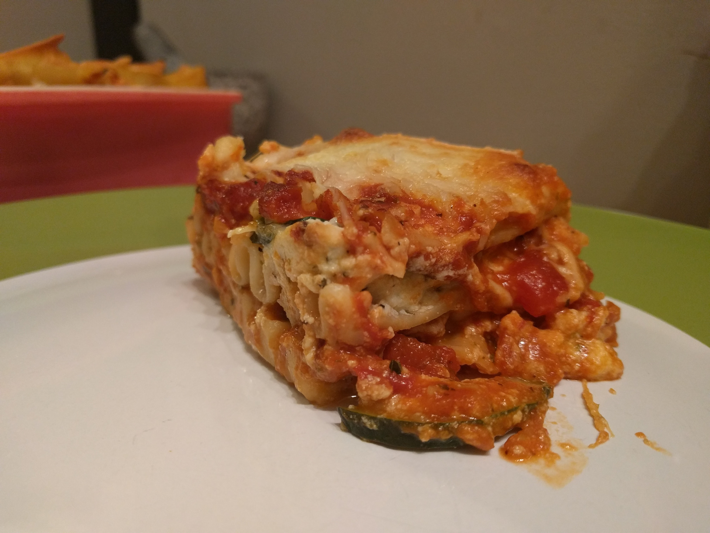
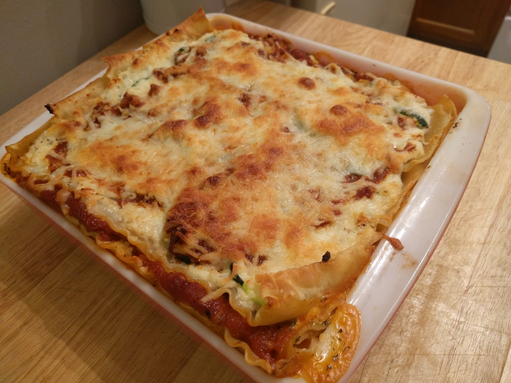
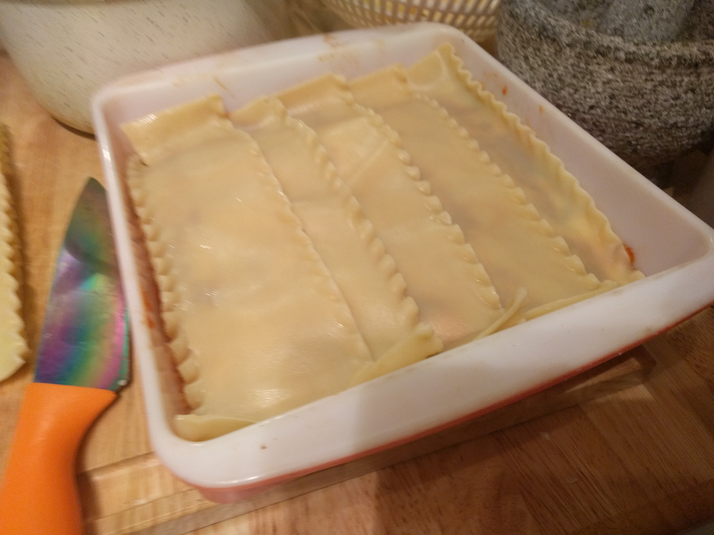

This veggie lasagna, I gotta say, was probably the best I’ve ever made. It was tomatoey and full of herbs, garlic and onions, a cheesy ricotta mixture with just the right amount of salt, and a splash of balsamic vinegar. Layers of zucchini come together with the sauce and cheese to provide just the right amount of bite. Oh! And the edges of the pasta were crispy. Geez, writing about it is making me hungry. The only thing I regret is that I should’ve added more veggies. Maybe like a ratatouille lasagna or something. . . . with spinach, spinach is good too. What can I say, I’m kind of a veg head. Alrighty then, here we go.
Ingredients :
- Cooked lasagna noodles (fresh if possible, but that’s a tall order)
- Small thing of ricotta
- A bit of milk
- Shredded mozzarella
- Shredded parmesan
- 1 can of unsalted diced tomatoes
- 1 can of tomato puree or sauce
- Tomato paste
- An assortment of dried or fresh herbs (fresh is generally better, but dried will do in a pinch) I used: dried basil, parsley, oregano, and a bit of ground rosemary, oh and a little red pepper flake.
- Finely diced yellow onion, or you can grind it; it’ll cook faster and incorporate into the sauce better.
- Plenty of fresh ground garlic
- A splash of balsamic vinegar
- Plenty of fresh veggies, I only used zucchini because it was hanging around my fridge on the verge of going bad, but you can use any veggie that would go well with the fresh tomato sauce. Try thinly sliced eggplant, squash, or tomato and spinach.
The How-to :
- Firstly, preheat your oven to about 350 degrees, and you’re also going to want to salt your veggie slices to draw out excess moisture. Doing this helps the veggies cook faster and more evenly when layered with the tomato sauce. It also prevents the lasagna from becoming “watery” when it’s baked. It also help if you make the slices pretty thin. Lay the bowl of salted veggies to the side to do their thing.
- Then you’re going to want to get your sauce going, which is going to take at least thirty minutes to simmer before you can use it. Forty-five minutes is optimal, but thirty works. The long simmering time allows the flavors to meld. Anyways, saute your onions until translucent, some char is good too. Season the onions with salt, pepper, your herbs, then add a good squirt of tomato paste. After you add the tomato paste, turn up the heat some and deglaze the pot with a generous splash of balsamic vinegar. Then you can add your cans of tomatos. Put the lid on caddy corner so that moisture can escape, turn the heat down to a simmer, and let it go.
- Next you can start your noodles. Follow the directions on the box and make sure you salt and oil you noodle water.